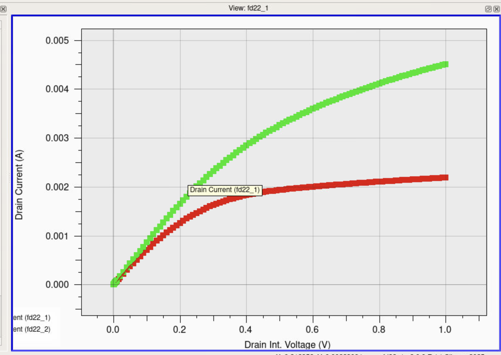

Semiconductor device modeling from band structure to TCAD, in Python, MATLAB, and Silvaco

Graduate coursework for EEE 533 (Semiconductor Device and Process Simulation, ASU, Fall 2025) spanning hand-coded numerical solvers and commercial TCAD. The work moves from quantum band-structure and carrier-statistics calculations in Python, through custom 1D Poisson and drift-diffusion PN-junction solvers in MATLAB, to Silvaco Victory/ATLAS device simulations of MOSFETs, SOI transistors, MOS capacitors, and MESFETs/HEMTs. It culminates in an IEEE-style paper on gate leakage and high-k dielectric scaling. **Highlight:** HfO2 cuts gate leakage ~1.8e5x vs SiO2 (85.3 to 4.73e-4 A/cm2) at 1.0 nm EOT
Each problem was approached numerically from first principles where feasible, building solvers (EPM Hamiltonian diagonalization, tridiagonal LU, Gummel/Scharfetter-Gummel iteration, bisection) rather than relying on canned routines, then cross-checking against analytical limits such as the depletion approximation and published reference values. Device-scale problems used Silvaco Victory Device/ATLAS with explicit mesh refinement, physical model selection (CVT, SRH, Auger, field mobility, impact ionization, quantum/density-gradient corrections), and automated parameter extraction. Python labs embed results, equations, and plots into self-contained HTML reports.
Deliverables include working solvers, eight Silvaco TCAD decks, and written reports; quantitative highlights are the HfO2 vs SiO2 leakage reduction (1.8e5x, 85.3 to 4.73e-4 A/cm2) and PN-diode field agreement within 3-5% of the depletion approximation. See docs/EEE533_FinalProject.pdf for the full paper.